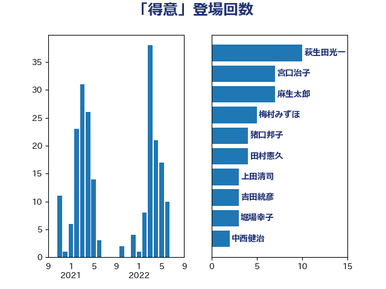

単語「得意」

| 萩生田光一 | 自由民主党 | 10 回 |
| 宮口治子 | 立憲民主党 | 7 回 |
| 麻生太郎 | 自由民主党 | 7 回 |
| 梅村みずほ | 日本維新の会 | 5 回 |
| 猪口邦子 | 自由民主党 | 4 回 |
| 田村憲久 | 自由民主党 | 4 回 |
| 上田清司 | 国民民主党 | 3 回 |
| 吉田統彦 | 立憲民主党 | 3 回 |
| 堀場幸子 | 日本維新の会 | 3 回 |
| 中西健治 | 自由民主党 | 2 回 |
| 住吉寛紀 | 日本維新の会 | 2 回 |
| 北神圭朗 | 無所属 | 2 回 |
| 小沢雅仁 | 立憲民主党 | 2 回 |
| 山口壯 | 自由民主党 | 2 回 |
| 平井卓也 | 自由民主党 | 2 回 |
| 後藤祐一 | 立憲民主党 | 2 回 |
| 斎藤嘉隆 | 立憲民主党 | 2 回 |
| 杉本和巳 | 日本維新の会 | 2 回 |
| 東徹 | 日本維新の会 | 2 回 |
| 枝野幸男 | 立憲民主党 | 2 回 |
| 梅村聡 | 日本維新の会 | 2 回 |
| 櫻井周 | 立憲民主党 | 2 回 |
| 浅野哲 | 国民民主党 | 2 回 |
| 神谷裕 | 立憲民主党 | 2 回 |
| 秋野公造 | 公明党 | 2 回 |
| 西村康稔 | 自由民主党 | 2 回 |
| 西村智奈美 | 立憲民主党 | 2 回 |
| 赤羽一嘉 | 公明党 | 2 回 |
| 青柳仁士 | 日本維新の会 | 2 回 |
| 高木啓 | 自由民主党 | 2 回 |
| 一谷勇一郎 | 日本維新の会 | 1 回 |
| 下条みつ | 立憲民主党 | 1 回 |
| 伊藤渉 | 公明党 | 1 回 |
| 伴野豊 | 立憲民主党 | 1 回 |
| 佐々木さやか | 公明党 | 1 回 |
| 佐々木紀 | 自由民主党 | 1 回 |
| 吉川赳 | 無所属 | 1 回 |
| 吉良よし子 | 日本共産党 | 1 回 |
| 吉良州司 | 無所属 | 1 回 |
| 堂故茂 | 自由民主党 | 1 回 |
| 大串正樹 | 自由民主党 | 1 回 |
| 大島敦 | 立憲民主党 | 1 回 |
| 小熊慎司 | 立憲民主党 | 1 回 |
| 小野田紀美 | 自由民主党 | 1 回 |
| 山岸一生 | 立憲民主党 | 1 回 |
| 山崎誠 | 立憲民主党 | 1 回 |
| 岸真紀子 | 立憲民主党 | 1 回 |
| 平将明 | 自由民主党 | 1 回 |
| 平林晃 | 公明党 | 1 回 |
| 打越さく良 | 立憲民主党 | 1 回 |
| 斉藤鉄夫 | 公明党 | 1 回 |
| 日下正喜 | 公明党 | 1 回 |
| 有村治子 | 自由民主党 | 1 回 |
| 末松義規 | 立憲民主党 | 1 回 |
| 本田顕子 | 自由民主党 | 1 回 |
| 杉田水脈 | 自由民主党 | 1 回 |
| 松沢成文 | 日本維新の会 | 1 回 |
| 林芳正 | 自由民主党 | 1 回 |
| 柴田巧 | 日本維新の会 | 1 回 |
| 武田良太 | 自由民主党 | 1 回 |
| 比嘉奈津美 | 自由民主党 | 1 回 |
| 水岡俊一 | 立憲民主党 | 1 回 |
| 江島潔 | 自由民主党 | 1 回 |
| 浜田聡 | NHK党 | 1 回 |
| 浮島智子 | 公明党 | 1 回 |
| 清水貴之 | 日本維新の会 | 1 回 |
| 片山さつき | 自由民主党 | 1 回 |
| 片山大介 | 日本維新の会 | 1 回 |
| 牧島かれん | 自由民主党 | 1 回 |
| 田名部匡代 | 立憲民主党 | 1 回 |
| 石田昌宏 | 自由民主党 | 1 回 |
| 礒崎哲史 | 国民民主党 | 1 回 |
| 福島伸享 | 無所属 | 1 回 |
| 竹谷とし子 | 公明党 | 1 回 |
| 緑川貴士 | 立憲民主党 | 1 回 |
| 羽田次郎 | 立憲民主党 | 1 回 |
| 舩後靖彦 | れいわ新選組 | 1 回 |
| 若宮健嗣 | 自由民主党 | 1 回 |
| 若松謙維 | 公明党 | 1 回 |
| 藤川政人 | 自由民主党 | 1 回 |
| 藤巻健太 | 日本維新の会 | 1 回 |
| 西岡秀子 | 国民民主党 | 1 回 |
| 足立康史 | 日本維新の会 | 1 回 |
| 足立敏之 | 自由民主党 | 1 回 |
| 輿水恵一 | 公明党 | 1 回 |
| 辻元清美 | 立憲民主党 | 1 回 |
| 重徳和彦 | 立憲民主党 | 1 回 |
| 金村龍那 | 日本維新の会 | 1 回 |
| 鈴木俊一 | 自由民主党 | 1 回 |
| 鈴木敦 | 国民民主党 | 1 回 |
| 長友慎治 | 国民民主党 | 1 回 |
| 長坂康正 | 自由民主党 | 1 回 |
| 青山大人 | 立憲民主党 | 1 回 |
| 須藤元気 | 無所属 | 1 回 |
| 馬場伸幸 | 日本維新の会 | 1 回 |
| 高橋光男 | 公明党 | 1 回 |
| 高橋千鶴子 | 日本共産党 | 1 回 |
| 高階恵美子 | 自由民主党 | 1 回 |